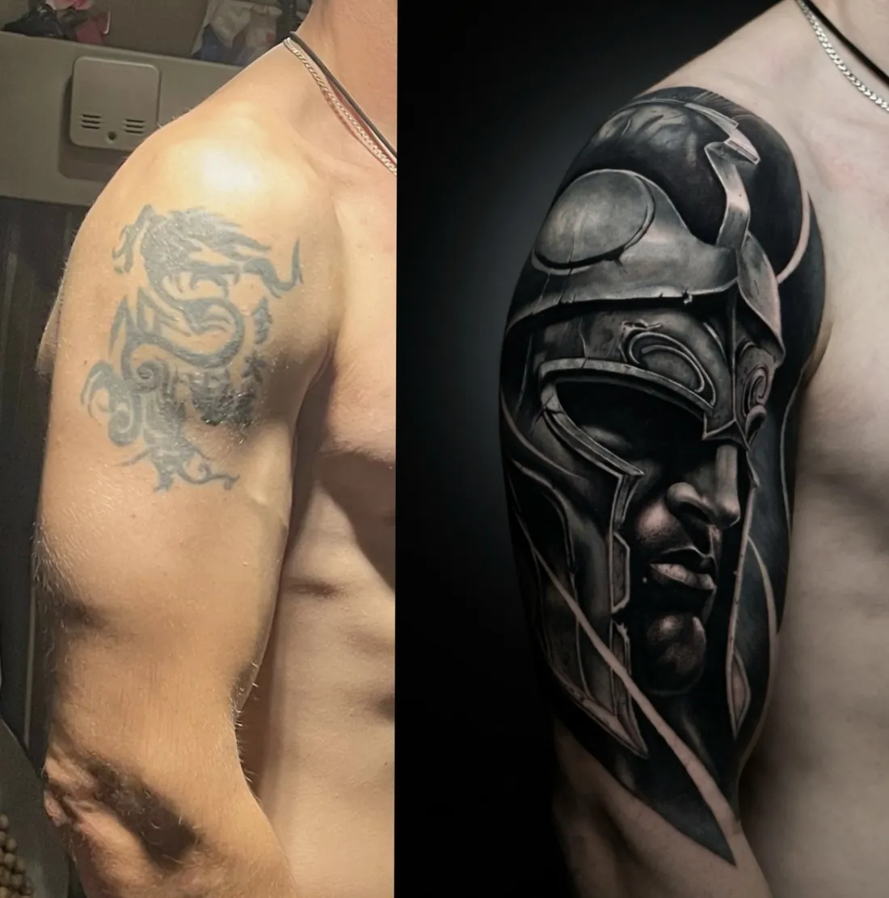

Тату-студия INKSIDE в Минске
Тату на шрамах в Минскенаша специализация ✦
Пришлите фото шрама при дневном свете: мастер скажет, можно ли работать сейчас, и предложит эскиз.
- от 180 BYN
- консультация 0 BYN
- фото при дневном свете
Консультация бесплатная. Ежедневно 11:00-23:00 по записи.


Перекрытия студиивсе наши, без стоков
Это перекрытия старых тату: принцип работы с рисунком поверх старой кожи похожий. Больше - на стене работ и в @inkside.minsk.



Подробнопо темам
Можно ли бить тату на шрамах
Чаще всего да, если шрам зрелый и спокойный. Татуировка не убирает шрам и не выравнивает кожу, но меняет то, как на него смотрят: рисунок отвлекает внимание, а цвет и тени прячут разницу в оттенке кожи. Рельеф при этом может остаться заметным на ощупь и под определённым светом, и об этом честно стоит знать заранее.
Решение всегда индивидуальное: мастер оценивает шрам по фото и вживую, а при сомнениях советует сначала показаться врачу.
Когда можно делать тату на шраме
Свежий шрам ещё меняется: он может быть красным или розовым, плотным, приподнятым, может чесаться. Работать по такой коже рано. Обычно шраму дают созреть, и ориентиром часто называют около года после травмы или операции. Зрелый шрам светлее, мягче, плоский и больше не меняется.
Если шрам после операции, спросите своего хирурга, когда коже можно такую нагрузку. Если шрам растёт, болит или выходит за края раны, это повод сначала обратиться к дерматологу.
Какие шрамы обычно подходят, а какие нет
- Плоские и светлые - самый понятный случай: рисунок ложится почти как на обычную кожу.
- Слегка вдавленные (например, после порезов или удалённых родинок) - часто можно работать, эскиз строят так, чтобы рельеф стал частью рисунка.
- Шрамы после операций - на животе, после лапароскопии, кесарева сечения или маммопластики - обычно рассматривают после полного созревания и с согласия врача.
- Шрамы от ожогов бывают очень разными: где-то кожа тонкая и неровная, где-то плотная. Тут особенно важна очная оценка.
- Келоидные и гипертрофические (выпуклые, растущие) шрамы, а также склонность к келоидам - частая причина отказаться от тату на этом месте. Такие случаи обсуждают с дерматологом.
Как проходит работа
- Фото при дневном свете. Снимите шрам прямо и немного сбоку, чтобы был виден рельеф. Отправьте в Telegram с парой слов, откуда шрам и сколько ему лет.
- Бесплатная консультация. Мастер скажет, можно ли работать сейчас, и предложит идеи. Иногда честный ответ - подождать.
- Эскиз под рельеф. Рисунок строится вокруг шрама: линии, тени и детали ставят так, чтобы шрам растворился в композиции. Стенсил на коже покажет, как всё ляжет.
- Сеанс и заживление. Одноразовые иглы вскрываем при вас. План ухода по дням, через месяц - фото на проверку.
Какой рисунок выбрать
Лучше всего шрамы прячут рисунки с движением и фактурой: растения, перья, животные, ч/б реализм с плотными тенями. Тонкая графика и fine line по шраму работают хуже: на неровной коже ровные тонкие линии выдают рельеф.
Если шрам на руке, его часто вписывают в крупную композицию на предплечье или в рукав.
Ощущения
Рубцовая ткань может ощущаться по-разному: где-то чувствительнее обычной кожи, где-то наоборот. Делаем паузы, когда нужно. Как ощущается тату по зонам - на странице больно ли делать тату.
Сколько стоит тату на шраме
Цена считается так же, как у любой работы, по времени и размеру. Перекрытие в калькуляторе на главной считается дороже простой графики. Точную цену мастер называет после утверждения эскиза.
| Минимум, до 1 часа | 180 BYN |
| Каждый следующий час | 150 BYN |
| Эскиз под вас | от 40 BYN |
| Консультация | 0 BYN |
| До 5 см | от 180 BYN |
| 5-10 см | от 330 BYN |
| 10-20 см | от 480 BYN |
| Рукав, нога или большая работа (сеанс) | от 930 BYN |
Итоговую цену мастер называет после утверждения эскиза: важны детализация, размер и место.
Вопросыкоротко
Можно ли делать тату на шрамах?
Чаще всего да, если шрам зрелый: светлый, плоский и больше не меняется. Мастер оценит его по фото при дневном свете.
Через сколько можно делать тату на шраме?
Обычно шраму дают созреть, ориентир - около года после травмы или операции. После операции стоит спросить своего хирурга.
Тату полностью скроет шрам?
Рисунок прячет разницу в цвете и отвлекает внимание, но рельеф может остаться заметным на ощупь и при боковом свете.
Можно ли перекрыть шрамы от порезов на руке?
Да, подход тот же: фото при дневном свете, оценка зрелости шрама и эскиз, который вписывает шрамы в рисунок.
Кому не стоит делать тату на шраме?
Если шрам келоидный или растёт, или есть склонность к келоидам, сначала стоит обсудить это с дерматологом.
Сколько стоит?
От 180 BYN за работу до 1 часа, каждый следующий час 150 BYN, эскиз от 40 BYN. Консультация бесплатная.


Ещё думаете?просто спросите
Напишите идею в двух словах: мастер честно скажет, подойдёт ли она вам и сколько будет стоить.
- телефон
- +375 (44) 511-19-12
- часы
- ежедневно 11:00-23:00